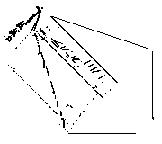

Universal Computer
The creation of Turing Machines demonstrated Game of Life's computing capabilities. However, they do not resemble an actual computer - storage and operation are different. This void in Game of Life technology was filled in 2009, with the creation of the Spartan Universal Computer-Constructor.
The 481672 cell pattern is composed entirely from "Spartan" components - still lives with eight or fewer live cells. It is also glider constructible, which means it can be created using only glider collisions.
The operands are kept in 11 sliding block memory registers, which can store any positive integer, zero included. Eight of these are accessible to the program. Eight two-state switches are provided for the fast storage of boolean values. The main memory is supplied by three tapes : the program tape (read-only),data tape and marker tape(writeable during run-time).
Performing calculations is only a part of what the UCC is capable of. By incorporating a construction arm (created by Paul Chapman and Dave Greene), it can create any glider constructible pattern, given a sufficiently long program tape, even itself. However, self-replication would take approximately 10 to the 18 generations, which is more than any current Game of Life application can handle.
Compared to other cellular automata-based computers, the Spartan has several advantages, which come mainly from it being closer to a conventional architecture. Specifically, it is relatively easy to program, having an instruction set which supports basic arithmetic, logical operations and bit shifts. Moreover, the binary storage it uses takes space smaller by orders of magnitude compared to a register machine. Having relative conditional jumps, rather than absolute, means that subroutines can be copied inside a program without changing the pointers.
In conclusion, this pattern is probably the most advanced and efficient computer achievable in Game of Life using current methods. Further progress will probably require a departure from conventional thinking an architecture never seen before.